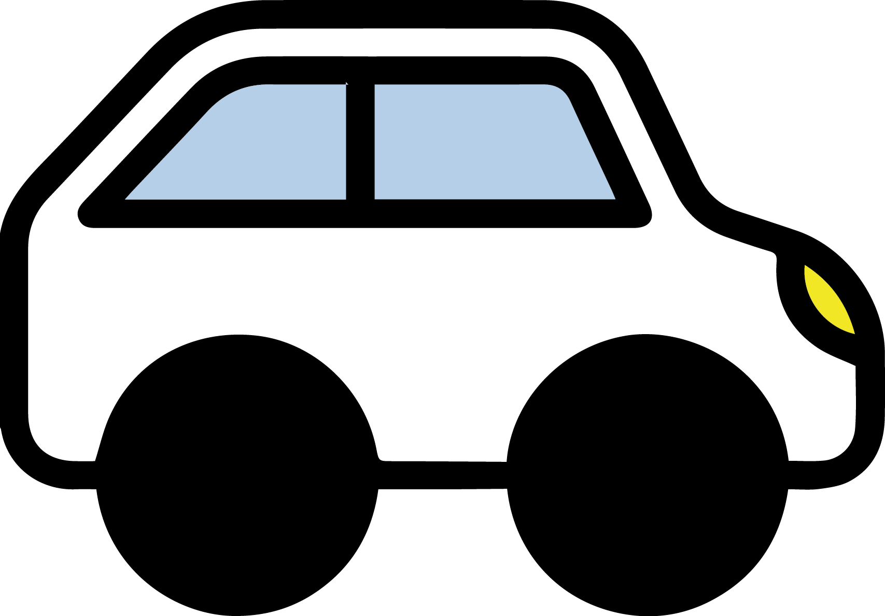
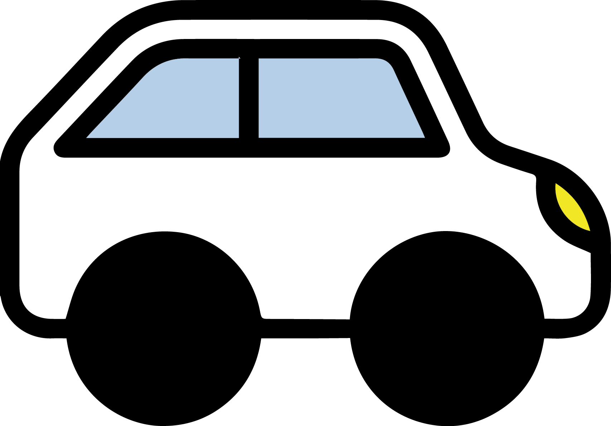

|
 |
|
|
|


打開電視、翻開報紙，酒駕肇事的新聞幾乎天天上演。根據內政部警政署的資料顯示，民國104年酒駕共造成8262人死傷，平均一天就有22.6人因為酒駕受傷或死亡。要如何阻止憾事發生？加重刑責，真的能有效杜絕憾事的發生嗎？
.png) 



初審通過酒駕違規罰責修法草案 新增連坐罰
今年四月，立法院初審通過加重酒駕違規罰則，未來酒駕違規罰鍰將從現行的1.5萬到9萬元提高為3萬到9萬元，吊扣駕照年限加倍為2年。此修正條文施行後5年內再犯被取締者，將在前次罰鍰外加9萬，之後每次加罰9萬元，無上限。拒絕酒測也從現行開罰9萬元加倍為18萬元，累犯同樣在前次罰鍰數額上、每次外加18萬元，無上限。此外，引人關注的是，修法後酒駕同車的乘客也得連坐受罰，被處6000元到1萬2000元罰鍰。然而，有人質疑同樣實施酒駕連坐罰的日本是依刑法來處罰，這次的提案修法卻是以行政法來規範酒駕連坐罰。對此，提案的立法委員陳曼麗解釋，有別於刑法起訴、判決等過程，行政法的速度較快，「如果你現在違法的話，馬上就可以開單處罰了。」
臺灣酒駕防制社會關懷協會秘書長林美娜認為無論是懲罰還是預防，都是遏止酒駕歪風缺一不可的要素。「酒駕的人都心存僥倖，認為自己不會出事。」她表示或許不是每次酒駕都會發生意外，但一旦肇事，後果都是不可挽回的。針對這次初審通過的罰則，她認為「同車共責」是一大進展，身邊的親朋好友有責任互相提醒、勸阻，是很進步的「預防」作為。對此，國立台灣大學法律系教授李茂生則表示，酒駕者不會因為身旁的好友勸阻就不開車。現在酒駕罰則非常嚴格，很可能喝一杯啤酒就超標，同車的人很難從外觀上察覺駕駛是否酒駕。「很有可能會造成沒有酒駕的人被罰，但酒駕依然在發生，不會因此而減少，這個法案有什麼意義？」
酒駕罰則加重，真的能防止酒駕發生嗎？
目前台灣法律對呼氣酒精濃度介於0.15%至0.25%之間者，是以《道路交通安全處罰條例》規範，屬於行政罰而沒有刑事責任。若是單純酒駕未肇事（呼氣酒精濃度達0.25%），則會移送檢察官，最高可判處兩年有期徒刑。然而，台灣目前監獄人滿為患無力負擔，所以檢察官面對第一次、第二次酒駕者會用緩起訴、附帶社會勞動服務的方式執行，直到被告犯滿三次才會起訴。「我們的重點到底是要關他，還是解決不要再犯的問題？」對於單純酒駕的案件，真理大學法律學系教授吳景欽支持用緩起訴的方式，但在緩起訴期間，要如何矯正酒駕者值得思考。在一些歐洲國家，檢察官會針對不同的酒駕者，量身制定緩起訴期間附履行事項。在過程中，使酒駕者了解到生命的可貴，進而根除酒駕習慣。


102年，立法院修法提高酒駕致死的刑責，從原本的「一年以上七年以下有期徒刑」改為「三年以上十年以下有期徒刑」。吳景欽表示，相較一般過失致死（處三年以下有期徒刑）與業務過失致死（處五年以下有期徒刑），其實酒駕致死的刑責已相當高。他也指出，修法前如果肇事者與被害者家屬達成和解，法官判緩刑的機會很高。但修法後沒有判緩刑的空間（三年以下有期徒刑才得以緩刑），在實務上也發現被告想和解的意願降低，造成官司訴訟期間拉長。
面對酒駕拒測，很多人心中或許都會浮現一個問題：可不可以訂定一條法律，如果拒測就代表承認酒駕？答案是不行。「罪刑法定的原則必須遵守。」吳景欽表示法律要講求證據，如果訂定這樣的罰則就是有罪推定，與法理相互違背。為了不讓有心人士鑽法律漏洞，法律規定：如果駕駛人拒測，員警依客觀認定駕駛人無法安全駕駛，可以請檢察官核發鑑定許可書，將其送往醫療機構強制抽血檢驗。
「從刑法將酒駕致死最高刑期改為十年後，但這四年來沒有一個法官判過十年。」林美娜認為，「法律被高高拿起，法官卻輕輕放下」，法官的輕判讓懲罰的嚇阻效果大大降低。她表示，近年來社會大眾對酒駕肇事感到厭惡、警察取締也變得積極，但法官卻總是輕判。「如果今天酒駕會被處無期徒刑，而且百分之百會被抓到，那刑法就有嚇阻效果。」李茂生表示酒駕被抓到的機會不是那高，所以很多人會心存僥倖。如果要讓刑法有威嚇作用制止酒駕，有兩個條件：一是警察能確實抓到酒駕。二是違反比例原則。但在現實社會中，這兩個條件都不可能達到。「ㄧ酒駕就關起來，他的工作、家庭、與社會的關係，全部都被斷絕掉。他只會變得更加沈淪，問題並不會解決。」李茂生建議將單純酒駕者，移到另一套系統內，以行政強制力治療，給予醫療協助等。他認為如何幫助酒駕者回到正軌，才是應該要思考的問題。

面對酒駕 預防勝過處罰
政府部門除了修訂法案之外，也不斷加強警察臨檢的密度。「這兩年中正區都沒有發生酒駕肇事致死的案件。」台北市政府警察局中正第一分局交通組長林岳寬表示，除了每一個月10到11次的臨檢，一般巡邏時也會加強取締酒駕，近幾年已看到成效。林岳寬發現拒測的人越來越多，他認為這個問題相當嚴重，值得好好思考。「前一天喝太多，早上醒來酒測值仍然會超標」，他表示在酒駕臨檢的過程中，上班尖峰時刻也是一個很常抓到酒駕的時間。若前天飲酒較多，酒精很可能還殘留在體內，建議民眾搭乘大中運輸工具或是計程車。
除了公權力執法的方式，民間業者也積極推廣酒後代駕。「酒後代駕服務必須要平價，才能讓這個產業普及。」去年剛成立酒後代駕服務公司的群悅科技公司總經理劉子莊表示，其實七、八年前久已經有酒商在推廣代駕，然而每次的服務費幾乎都要一千元以上，導致成效不彰。劉子莊指出，根據統計韓國平均每天約有70萬人需要代價服務，「韓國的人口大約是我們的兩倍、飲酒風氣盛行，若將70萬除以2再打個3折，台灣也有10萬人需要這樣的服務。」
「台灣很喜歡治亂世用重典，但刑法是最後手段，而不是用來預防犯罪的。」吳景欽表示，我們一直以來都只執著於如何懲罰酒駕，且過度迷信刑法。面對酒駕，台灣社會過去的討論多聚焦於如何加重刑責，或許我們應當換個方式，以「預防」的角度來思考。